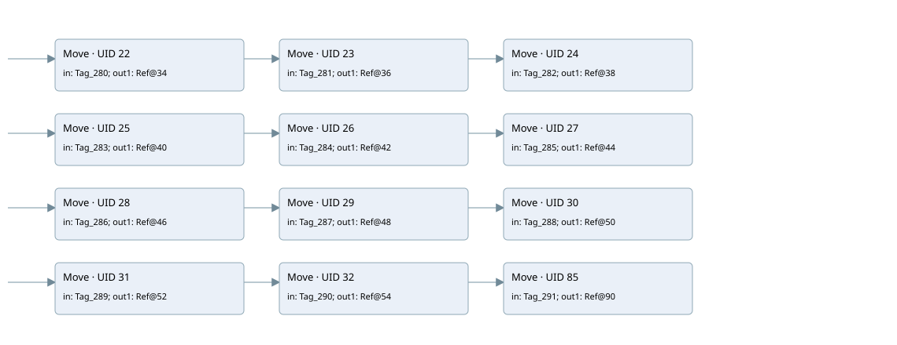

hmi output
hmi output · 검색 색인 순서 1 · 원본 내부 NID 추정 1
백업 PLF 원본의 2990671 바이트 위치에서 복원한 XML. 검색 문서 356의 객체 키 161022006f17000000000000와 연결했다. 이름 해석 12/24개. 남은 RefId는 상수 또는 미해석 참조다.
연결 구조 다시 그리기
원본 Part/PCon/Wire를 이용한 연결도다. TIA 화면의 래더 배치 또는 실행 결과를 재현한 그림은 아니다. 핀 연결은 아래 표와 원본 XML을 기준으로 읽는다. 노드 위에 마우스를 두면 피연산자 이름을 볼 수 있다.

접점·코일·블록과 피연산자
| Part UID | Gate | Negated 핀 | 연결 피연산자 |
|---|---|---|---|
| 22 | Move | in = Tag_280; out1 = RefId 27 / ORef UID 34 | |
| 23 | Move | in = Tag_281; out1 = RefId 50 / ORef UID 36 | |
| 24 | Move | in = Tag_282; out1 = RefId 51 / ORef UID 38 | |
| 25 | Move | in = Tag_283; out1 = RefId 52 / ORef UID 40 | |
| 26 | Move | in = Tag_284; out1 = RefId 53 / ORef UID 42 | |
| 27 | Move | in = Tag_285; out1 = RefId 54 / ORef UID 44 | |
| 28 | Move | in = Tag_286; out1 = RefId 55 / ORef UID 46 | |
| 29 | Move | in = Tag_287; out1 = RefId 56 / ORef UID 48 | |
| 30 | Move | in = Tag_288; out1 = RefId 57 / ORef UID 50 | |
| 31 | Move | in = Tag_289; out1 = RefId 58 / ORef UID 52 | |
| 32 | Move | in = Tag_290; out1 = RefId 59 / ORef UID 54 | |
| 85 | Move | in = Tag_291; out1 = RefId 49 / ORef UID 90 |
접점 경로를 펼친 조건식
Contact·O/A·비교기의 원본 연결을 읽기 쉽게 펼친 보조 해석이다. POWER는 전원 레일 시작을 뜻한다. 호출 블록·에지·타이머의 내부 동작과 다중 쓰기 순서는 이 표로 실행 검증하지 않았다. 미해석 핀과 RefId는 원문 연결표에서 확인한다.
| UID | 동작 | 대상 | 원본 접점 경로 | 내용 |
|---|---|---|---|---|
| 22 | Move | ORef UID 34 | POWER | Move 입력 Tag_280 |
| 23 | Move | ORef UID 36 | Move UID 22.eno (블록 동작 확인) | Move 입력 Tag_281 |
| 24 | Move | ORef UID 38 | Move UID 23.eno (블록 동작 확인) | Move 입력 Tag_282 |
| 25 | Move | ORef UID 40 | POWER | Move 입력 Tag_283 |
| 26 | Move | ORef UID 42 | Move UID 25.eno (블록 동작 확인) | Move 입력 Tag_284 |
| 27 | Move | ORef UID 44 | Move UID 26.eno (블록 동작 확인) | Move 입력 Tag_285 |
| 28 | Move | ORef UID 46 | POWER | Move 입력 Tag_286 |
| 29 | Move | ORef UID 48 | Move UID 28.eno (블록 동작 확인) | Move 입력 Tag_287 |
| 30 | Move | ORef UID 50 | Move UID 29.eno (블록 동작 확인) | Move 입력 Tag_288 |
| 31 | Move | ORef UID 52 | POWER | Move 입력 Tag_289 |
| 32 | Move | ORef UID 54 | Move UID 31.eno (블록 동작 확인) | Move 입력 Tag_290 |
| 85 | Move | ORef UID 90 | Move UID 32.eno (블록 동작 확인) | Move 입력 Tag_291 |
원본 배선 연결
| Wire UID | 동일 Wire 연결 끝점 |
|---|---|
| 21 | Powerrail {} ↔ Part 22.en ↔ Part 25.en ↔ Part 28.en ↔ Part 31.en |
| 56 | ORef 33 (Tag_280) ↔ Part 22.in |
| 57 | Part 22.eno ↔ Part 23.en |
| 58 | Part 22.out1 ↔ ORef 34 (RefId 27) |
| 59 | ORef 35 (Tag_281) ↔ Part 23.in |
| 60 | Part 23.eno ↔ Part 24.en |
| 61 | Part 23.out1 ↔ ORef 36 (RefId 50) |
| 62 | ORef 37 (Tag_282) ↔ Part 24.in |
| 63 | Part 24.out1 ↔ ORef 38 (RefId 51) |
| 64 | ORef 39 (Tag_283) ↔ Part 25.in |
| 65 | Part 25.eno ↔ Part 26.en |
| 66 | Part 25.out1 ↔ ORef 40 (RefId 52) |
| 67 | ORef 41 (Tag_284) ↔ Part 26.in |
| 68 | Part 26.eno ↔ Part 27.en |
| 69 | Part 26.out1 ↔ ORef 42 (RefId 53) |
| 70 | ORef 43 (Tag_285) ↔ Part 27.in |
| 71 | Part 27.out1 ↔ ORef 44 (RefId 54) |
| 72 | ORef 45 (Tag_286) ↔ Part 28.in |
| 73 | Part 28.eno ↔ Part 29.en |
| 74 | Part 28.out1 ↔ ORef 46 (RefId 55) |
| 75 | ORef 47 (Tag_287) ↔ Part 29.in |
| 76 | Part 29.eno ↔ Part 30.en |
| 77 | Part 29.out1 ↔ ORef 48 (RefId 56) |
| 78 | ORef 49 (Tag_288) ↔ Part 30.in |
| 79 | Part 30.out1 ↔ ORef 50 (RefId 57) |
| 80 | ORef 51 (Tag_289) ↔ Part 31.in |
| 81 | Part 31.eno ↔ Part 32.en |
| 82 | Part 31.out1 ↔ ORef 52 (RefId 58) |
| 83 | ORef 53 (Tag_290) ↔ Part 32.in |
| 86 | Part 32.eno ↔ Part 85.en |
| 84 | Part 32.out1 ↔ ORef 54 (RefId 59) |
| 87 | ORef 89 (Tag_291) ↔ Part 85.in |
| 88 | Part 85.out1 ↔ ORef 90 (RefId 49) |
식별자 해석 근거 24개
| ORef UID | RefId | 이름 | IdentXmlPart 파일 | 해석 방법 |
|---|---|---|---|---|
| 33 | 24 | Tag_280 | 0632-IdentXmlPart.xml | UID/RID + search-text + NID agreement |
| 34 | 27 | 미해석 RefId | 식별 선언 원본 참조 | 미해석 |
| 35 | 28 | Tag_281 | 0632-IdentXmlPart.xml | UID/RID + search-text + NID agreement |
| 36 | 50 | 미해석 RefId | 식별 선언 원본 참조 | 미해석 |
| 37 | 30 | Tag_282 | 0632-IdentXmlPart.xml | UID/RID + search-text + NID agreement |
| 38 | 51 | 미해석 RefId | 식별 선언 원본 참조 | 미해석 |
| 39 | 32 | Tag_283 | 0632-IdentXmlPart.xml | UID/RID + search-text + NID agreement |
| 40 | 52 | 미해석 RefId | 식별 선언 원본 참조 | 미해석 |
| 41 | 34 | Tag_284 | 0632-IdentXmlPart.xml | UID/RID + search-text + NID agreement |
| 42 | 53 | 미해석 RefId | 식별 선언 원본 참조 | 미해석 |
| 43 | 36 | Tag_285 | 0632-IdentXmlPart.xml | UID/RID + search-text + NID agreement |
| 44 | 54 | 미해석 RefId | 식별 선언 원본 참조 | 미해석 |
| 45 | 38 | Tag_286 | 0632-IdentXmlPart.xml | UID/RID + search-text + NID agreement |
| 46 | 55 | 미해석 RefId | 식별 선언 원본 참조 | 미해석 |
| 47 | 40 | Tag_287 | 0632-IdentXmlPart.xml | UID/RID + search-text + NID agreement |
| 48 | 56 | 미해석 RefId | 식별 선언 원본 참조 | 미해석 |
| 49 | 42 | Tag_288 | 0632-IdentXmlPart.xml | UID/RID + search-text + NID agreement |
| 50 | 57 | 미해석 RefId | 식별 선언 원본 참조 | 미해석 |
| 51 | 44 | Tag_289 | 0632-IdentXmlPart.xml | UID/RID + search-text + NID agreement |
| 52 | 58 | 미해석 RefId | 식별 선언 원본 참조 | 미해석 |
| 53 | 46 | Tag_290 | 0632-IdentXmlPart.xml | UID/RID + search-text + NID agreement |
| 54 | 59 | 미해석 RefId | 식별 선언 원본 참조 | 미해석 |
| 89 | 48 | Tag_291 | 0632-IdentXmlPart.xml | UID/RID + search-text + NID agreement |
| 90 | 49 | 미해석 RefId | 식별 선언 원본 참조 | 미해석 |
검색 코드 보조 자료
참조 명칭을 찾기 위한 자료이며 실행 순서나 AND/OR 관계는 위 연결표로 확인한다.
move "tag_280" move "tag_281" move "tag_282" move "tag_283" move "tag_284" move "tag_285" %db14.dbw6 %db14.dbw8 %db14.dbw10 move "tag_286" move "tag_287" move "tag_288" %db14.dbw12 %db14.dbw14 %db14.dbw16 move "tag_289" move "tag_290" move "tag_291" %db14.dbw18 %db14.dbw20 %db14.dbw22 %db14.dbw0 %db14.dbw2 %db14.dbw4